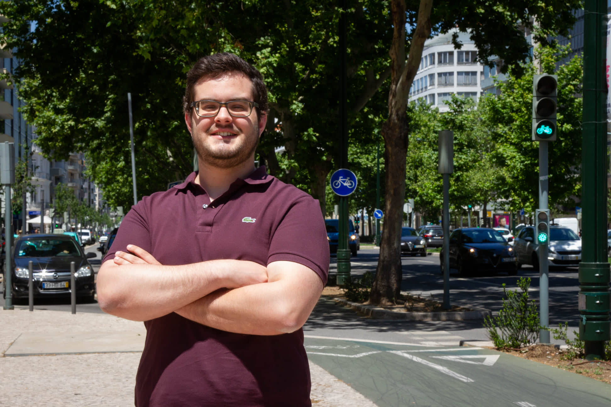

Postdoc researcher
ITS /
Technical University of Denmark

I'm a Postdoc researcher at the Technical University of Denmark, where
I'm currently working on a framework for finding optimal climate adaptation
policies through a combination of reinforcement learning and agent-based
simulation. This decision support tool seeks to find dynamic links between
flooding events, transport, health, and wellbeing to uncover how optimal
adaptation policies can be discovered to maximize societal wellbeing.
Previously, I obtained my PhD (magna cum laude) in Instituto
Superior Técnico, Portugal, where I focused on understanding objective
cycling safety, subjective cycling safety, and the relation between the
two using a machine learning approach. My research focused on understanding
and predicting how cyclists' safety is influenced by the context where cyclists
cycle and the surrounding built environment.